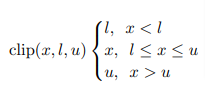

Quantization
An introduction and summary of quantization methods.
I will rewrite it by LaTeX if necessary for better reading.
Preliminary
Intro.
What does quantization mean? Efficient? How can it work?
In Wikipedia, they define quantization as: “Quantization, in mathematics and digital signal processing, is the process of mapping input values from a large set (often a continuous set) to output values in a (countable) smaller set, often with a finite number of elements.” It’s trivial that we need precise numbers during computation to obtain precise results. A precise number is always the values in the real number set, which is actually a large set.
However, using more precise numbers means that you needs more memory to store it (it’s the same in the real world, imaging that you are struggling to remember some specific things, such as π ). So, reducing the precision to remember something easily is natural. And that is what quantization does. For computer, it is not different, and it may be more clear to see why. The goal of quantization is to reduce the precision of the parameters (weights, bias) and the intermediate activations to low-precision.
Binary system
We use decimal system in our daily life, with 10 numbers and can write any number in powers of 10:
Computers work internally in the binary system with only two digits 0 and 1, the real number 9.90625 can be written as:
Normalized scientific notation and floating-point representation
In decimal system, we express any real number in normalized scientific notation:
where r is a real number in the range 0.1 <= r < 1 and n is an integer.
The real number in the form 0.0025 is called a fixed-point number, and its floating-point representation is 0.259*10^{-2} (just the normalized scientific notation).
Since computers can only operate using real numbers expressed in a fixed number of digits (depending on their word length), by using the floating-point representation we can express the numbers in a larger range. For example, with a fixed 8 digits, one can only express the real number in fixed-point form from 0.0000001 (10^-7) to 9.9999999 (≈10). However, in the floating-point representation the range is from 10^-99 to 10^99 if we use 2 of the digits to represent a power if 10. But at what cost? The accuracy of the numbers of floating-point representation will be relatively lower (it is similar to our main topic quantization).
In binary system, we have similar representation:
where 1*2^-1 <= q < 1( 1/2,1) and m is an integer. q is called the mantissa and m is called the exponent and they are both in the binary form. Actually, m decides the movement of the binary point in q. For example, if m equals to 4 (in binary form 100), we may shift the binary point 4 places to the right.
Since the first nonzero bit must be 1 in the mantissa, we can express q as (1.f)_2 and hence the first bit does need to store.
The accuracy of a number represented by a computer depends on the word length of the computer, such as 32 bits, 64 bits. The word length is divided into three section in the floating-point representation (here use 32 bits as example): 1. one bit for the sign if q; 2. 8 bits for m (there also contains 1 bit for m’s sign); 3. 23 bits for q.
(FP16: 1: sign, 5: m, 10: q.)
(FP32: Single-precision floating-point format; FP16: Half-precision floating-point format)
It has the following form:
where
and
Noting that m has 7 digits in binary, so the largest m is 127. Hence a computer with word length 32 bits can handle numbers as small as (1.f * 2^-m) and as large as (1.f * 2^m). (Can not be used directly, the range of m has some trick, you can see in the next section)
Integer in binary
int8: using 1 byte (8 bits) to express the integer with sign.
1 | The first bit is used to express the sign, 1-negative; 0-positive. |
uint8: using 1 byte (8 bits) to express the integer without sign.
1 | 2^8-1 = 256-1 = 255 |
Why quantization?
So, quantization is just to transfer the values (weights, bias, activations) stored in the floating-point form in 32FP to the data type int8/unit8. (8/4/2/1 bit quantization, 8 bit is the most common one.)
When we apply quantization into a deep learning model
- More efficient computation. It is more efficient for many processors to handle integer calculation than corresponding floating -point calculations (Why?). On CPU, the latency of floating-point calculation command is averagely longer than the corresponding integer calculation command.
- Reduce memory footprint and storage footprint. Reduce the time cost in memory access. For FP32, each weight/bias need 32-bit storage, and it will become 8-bit after quantization.
- (Reduce the energy consumption)
Inference and Training
Although quantization can achieve good result in reducing the network computation, we still need complex and high-accuracy model in training to capture the slight gradient change. It’s a trade-off between the precision and efficiency.
Therefore, most of the time, we apply quantization on the trained neural network, which has become convergence. Then the precision will be maintained in best possible after quantization. This is the quantization on inference.
When applying quantization in running inference, we have PTQ and QAT approaches, which will be discussed later.
In fact, it’s not like we don’t use quantization in training of neural networks. QAT uses some techniques to recover the accuracy of models by re-training the networks with quantized parameters.
There also are algorithms focus on training the models on quantization from the very beginning. It seems to pay attention to better gradient quantization.
Basic Definition
The process of quantization is actually a rounding or truncation problem. There is a general function that maps real values in floating point to a lower precision range:
where x is a real value input (weight, bias, activation), q is the value after quantization, s is called scaling factor, z is called the zero point. s may be variable in different methods, which will be discussed later(calibration). z can be used to adjust the true zero in some asymmetrical quantization approaches.
(activation is the output of the activation function of each layer)
For the rounding function, it is always the same as the round function in python, that is four dropping and five filling in Chinese **(**not exactly, the first reason is that the rounding function varies with the version of python: py2: “Values are rounded to the closest multiple of 10 to the power minus n digits; if two multiples are equally close, rounding is done away from 0.” py3: “values are rounded to the closest multiple of 10 to the power minus n digits; if two multiples are equally close, rounding is done toward the even choice.” The second reason is that the rounding is influenced by the rounding errors of computer because of the world length limitation. Hence, you may use the functions in math or decimal modules of python. ). Sometimes researchers use the int() function in python, that is remaining the integer part regardless of the value after the decimal point.
Noting that here z is set inside the rounding function, but there also are some algorithms set z outside the rounding function. They are different in the searching domain of z, the former is in real numbers domain and the latter is in the lower precision domain. The consequence is that (you can prove it by using mathematics by yourself) the domain of real values that will be quantized into zero-point will be different (yes, it is a multiple to 1 mapping): If you set it before rounding, then you can choose a specific real number and the values around it (the range depends on s) to be quantized into 0. If you set it after rounding, the you can choose a value in the lower precision domain, for example a integer in int8, then actually we are finding values that will be rounded to z ( it’s just 0, since 0 with the values around it satisfies coincidently). I should emphasize that they are different! Since the rounding function is not linear, so you can’t do the operation like h(a+b)=h(a)+h(b). Note again that, when z is 0, these two ways are the same.
Asymmetric and symmetric quantization
Asymmetric (Affine) Quantization
For convenience, let’s first define s as:
We can use a widely used calibration method Min/Max (discuss later), which set the clip range as [β, α] = [Min_x, Max_X] and is always used in the asymmetric or symmetric quantization. Max_x and min_x is the maximum and minimum bounds of the quantizing real values (weights, bias, activation), b is the quantization bit width. This design is to make the quantized values is within the range of the lower precision:
With Min/Max, the asymmetric quantization formula is as follows:

Here, the minimum bound (is negative) is chosen to corresponding to the zero-point (-zpx actually). We can adjust the choice to change the range of the lower precision. It is called asymmetric because the range on the both sides of 0 in the real set is different.
Symmetric (Scale) Quantization
If we set the zero-point as 0, then 0 and its neighbors in the real number set are maps to 0 in the lower precision domain. When we set the clip range are the same on both sides, i.e. max(|x|), then the input range and integer range are symmetric around zero and hence it is called symmetric quantization (Sometimes we don’t require the input range to be symmetric):
Since we need 0 maps to 0, for 8-bit quantization the integer range should be [-127, 127], deleting -128 to satisfy symmetry. Noting that it may be insignificant for 8-bit quantization since there are 256 representable values, but for lower bit quantization it should be considered signigicantly.
There is no zero-point in symmetric quantization (since it’s 0), the formula is simpler:
Comparison
Since there is no zero-point in symmetric quantization, which can lead to reduction in computational cost during inference.
However, when the input range is not symmetric , such as [-20,1000], symmetric quantization will be inefficient since lots of bits in int8 are not used.
So, we may choose them according to the data distribution of the input. If it’s a approximately normal distribution around 0, using symmetric quantization is better. If it is activations after ReLU, it is obviously that using asymmetric quantization is better.
Calibration
Both in dynamic quantization and static quantization (In PTQ), we need to determine the clipping range of the parameters or activations. The following is the methods to define how to determine it.
Min/Max
Min/Max is popular as we have introduced since it is simple. However, it is susceptible to outlier data in activations, since there will be a waste for some bits position.
In static quantization (need a series of calibration inputs to do pre-calculation), the formula is as follows:
where X is one local sample, x is the global.
When we use calibration methods except Min/Max, the process will always be called saturated quantization contrast with Min/Max (unsaturated methods).
Clipping
We can do clipping on the input range before scaling to solve the problem of outlier:

the formula of clip function may be:

Some of the following methods are focus on how to find the clipping bounds.
Exponential moving average (EMA)
When clipping activations, sometimes we will use EMA (or MovingAverageMinMax):
where c is set as 0.01 by default. We can see that it tends to keep the history result and fine-turning according to local sample.
Kullback-Leibler divergence (KL)
KL-divergence, or relative entropy or information divergence is a measure to show the relative entropy (how different) of probability distributions between two sets, which are defined on the same probability space.
We think that quantization will cause less information loss from the original data if the data distribution of quantized data is more similar to the original data. Such information loss can be calculated by KL-divergence (The default method used by TensorRT, a PTQ method).
For discrete probability distribution, P is the original data distribution that falls in several bins and Q is the quantized data histogram, the KL-divergence is:
In TensorRT, KL-divergence is used to optimize threshold selection (Since there is always a trade-off between range and precision of the int8 representation(for activations outliars)), the procedure is as follows:
Percentile
Set the range to a percentile of the distribution of positive/negative values(when symmetric, absolute values) seen during calibration. For example, when 99% calibration, 1% values will be clipped.
Dequantization
When applying QAT, the fake quantization (or simulated quantization) operations are always used, where the dequantization operation will be used.
In asymmetric quantization, the corresponding dequantize function is:
In symmetric quantization:

Quantization Granularity
We know that the clipping range is determined based on the input range (real numbers). The input range is determined by the input data. It is important to set where to collect the input data, or the choice for sharing the quantization parameters.
Tensor-wise, or layer-wise. The clipping range is determined by considering all the weights or activations in the convolutional filters of a layer.
Channel-wise, considering values in each channel, independent of other channels. For weights, it is kernel-wise or filter-wise.
We know that different channel of the features may contain different information, so the range of each convolutional filter can vary a lot. Hence, channel-wise quantization is suitable and is currently the standard method.
Post-training-Quantization (PTQ)
With a pre-trained FP32 neural network, Post-training quantization (PTQ) algorithms convert it into a fixed-point network. This process doesn’t need training (hence no need to care about backpropagation) and can be data-free or require a series of calibration inputs.
How to quantize parameters depends on the types of parameters. For weight, this range can be computed statically or pre-calculated. Since weights are almost convergent during the training of floating-point model, so their range will not vary so much. However, since the input of the model is different every time, the activations in the network may have different range and it is very likely to have outlier. So we will focus on activations to do calibration (in Pytorch).
Dynamic quantization: the range is dynamically calculated for each activation map during runtime. We can use some real-time computation (Min/Max, percentile, etc.). It will achieve high accuracy but need more computational cost.
Static quantization: clipping range is pre-calculated by running a series of calibration inputs.
Note that there are some slight differences in the quantization on Pytorch and TensorFlow. In Dynamic quantization, the quantization of activations on Pytorch is dynamic and should be done, while on TensorFlow activations could not be quantized. When you choose to quantize activations, the computation between weights and activations will be done on Int8. When you choose not, the weights will be converted back to floating-point in computation. The static quantization in TensorFlow is called integer quantization.
Quantization-Aware-Training (QAT)
When we use PTQ, we always have accuracy loss, especially in low-precision quantization. Therefore we need some techniques to help recover the accuracy, and quantization-aware-training (QAT) is one of them.
QAT refers to inserting some quantization operations into the neural network and then retraining or fine-turning the network. This models the quantization noise in training to allow the network to adapt to the quantized weights and activations (but I think this may not have solid theoretical basis).
Fake Quantization (simulated quantization)
The most common approach of QAT is fake quantization, or simulated quantization, which is a combination of quantize and dequantize operation that produces an approximation of the parameters:
where x and x_hat are both floating-point values. The reason to apply fake quantization is to simulate the effects of quantization.
Straight-Through Estimator (STE)
In order to achieve such purpose, we need to retraining the simulated network. However, the gradient of the rounding operation is either 0 or undefined everywhere (step function) and then can’t be used as back-propagation. Hence, we need to design some techniques to solve such issue. Straight-through estimator is one of the solutions by approximating the gradient of the rounding operator as 1:
By using this, we we can calculate the gradient of the quantize and dequantize operation w.r.t the input:
where [q_min,q_max] is the clipping range (the s in this picture equals to the 1/s of previous).
Note that we actually skip the quantize and dequantize operation in backward pass since STE approximates the gradient as 1 when the input is in the clipping range.
Learning Quantization Parameters
As we have indicated, the quantization parameters (clipping range) depend on the inference by using a set of calibration. But we also can learn the quantization parameters along with the model weights. PACT……
!!!!! After training, the network is transformed by quantization again (i.e. using static quantization) to the low-precision network.